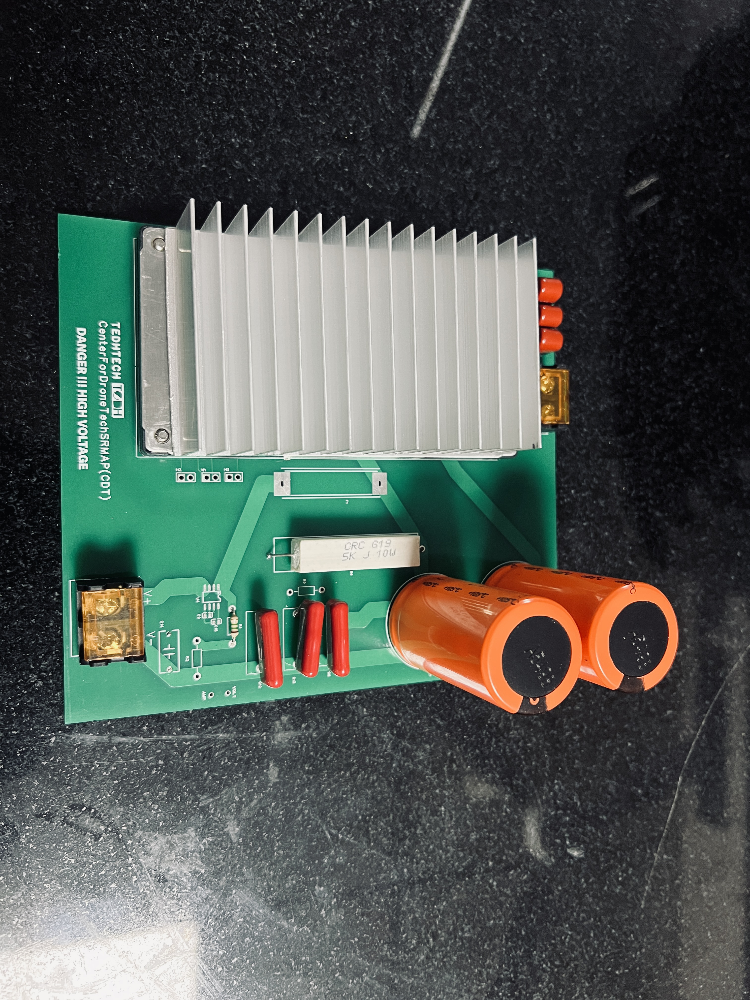
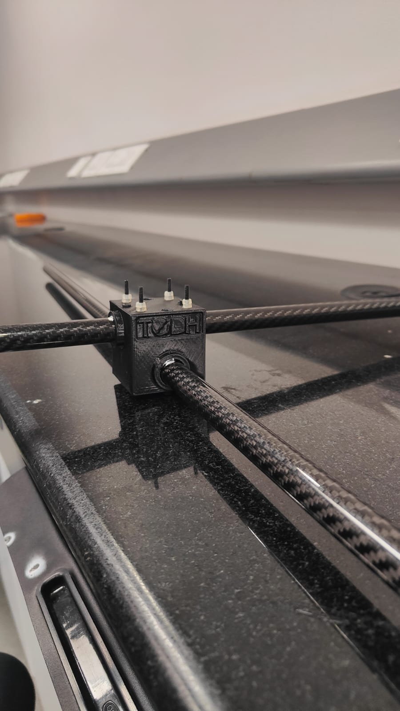

Problem
Battery-limited drones have narrow endurance windows. A tethered configuration offers a different path, but it only works if power conversion is efficient and the hardware remains practical for flight.
Tethered Drone Power System
This project focused on the electrical backbone of a tethered drone platform, where efficiency, component choice, and physical feasibility matter as much as the circuit itself.
Battery-limited drones have narrow endurance windows. A tethered configuration offers a different path, but it only works if power conversion is efficient and the hardware remains practical for flight.
Hardware Designer. I focused on the PCB and power-delivery side of the system, moving between component-level design, simulation, and physical validation.
Power systems demand discipline. This project reinforced how much good engineering depends on grounding a design in physical validation rather than trusting calculations alone.

Onboard power path integrating TDK DC-DC modules for flight constraints.

Ground-side conversion and distribution for tethered endurance.

Low-weight airframe geometry designed around power and tether routing.

Physical build progress connecting simulation choices to real hardware.